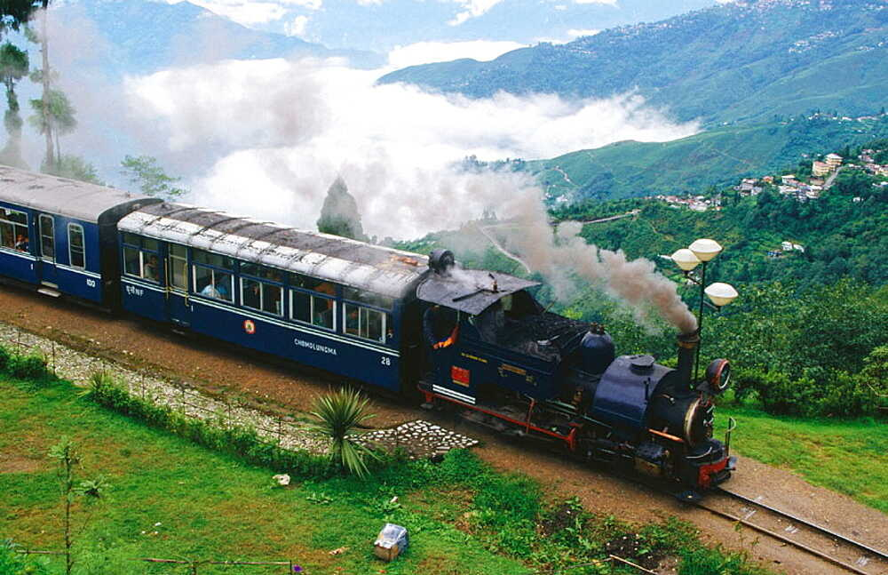

Darjeeling

The original inhabitants of the Darjeeling Hills were Lepchas or Rongpa (the ravine folks)
as they prefer themselves to be known as. Though their origin is obscure, they are decidedly
Mongolian in feature. The Khampas, another branch of the Lepchas, are warrior-like and more
dashing than their docile cousins. The Khampas are recent immigrants from Tibet. The greater
bulk of the people in the Hills are Gorkhas . They are industrious and enterprising as a race
and speak various dialects. The short Mongolian type Nepalese, the Gorkhas, renowned for their
military prowess the world over, and the first to be decorated with the coveted Victoria Cross,
finds jobs and security both in the British and Indian armies. They carry the traditional weapon,
the Khukri-a curved ornamental knife. Among the population are also the Newars or best known,
the world over as the Sherpas. They are well known for their courage, stamina and surefootedness
and for their immeasurable contributions to Mountaineering. Also much in evidence in the Hills are
the Bhutias and they are divided into Tibetan, Bhutan, Dharma and Sikkimese Bhutias and a greater
bulk of Bengalee from Siliguri subdivision.